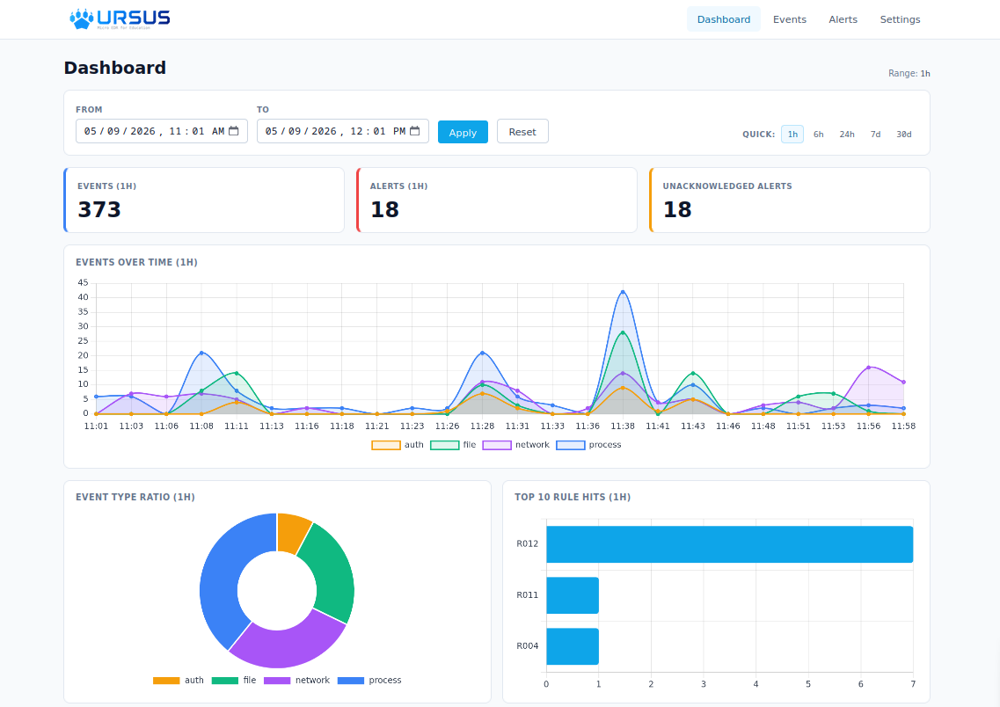

URSUS（ウルサス） とは
URSUS は Python で実装されたセキュリティ学習向けの簡素な EDR（Endpoint Detection and Response） で、
EDR が端末上でどのように動作し、どのように振る舞うのかを明確にするため、
役割ごとに分離された複数のコンポーネントが連動するよう設計されています。
またコード全体を読み解くことで Linux におけるイベント収集のアプローチを学ぶことができ、実際のEDRの動作を理解するためのヒントを得ることができます。
動作も簡素ながら実際の EDR を模倣しているため、仮想マシン上での検証やハッキング手法の実践を試すための実用ツールとしても使用可能です。

主な特徴
URSUS は以下のような特徴を持っており、安心して学習に使用できます。
4つのセンサー
Linux が標準で備える仕組みを利用し、デバイス上のイベントとしてプロセス / ファイル / ネットワーク / 認証の4フィールドに対するログを収集します。
宣言的ルール
YAML で記述する条件式（Koguma）を独自エンジンで評価する、簡素なアラートトリガー方式を採用。 コード変更なしで自由にルールを追加することができます。
制限付きレスポンス
レスポンス動作はアラート / プロセス停止 / ファイル隔離の3つ。 既定で全てDry-Runモードなので、誤検知による実害を抑制できるため学習に最適です。
コンポーネント分離
イベントを監視する「Sensor」、アラートをトリガーする「Detector」、ダッシュボードを提供する「UI」 が独立コンポーネントとして動作します。
シンプルなUI
URSUS の UI は非常にシンプルな設計となっており、端末上のイベントやトリガーされたアラートが簡単に確認できます。
試してみる
URSUS は GitHub からダウンロードできます。
こんな人向け
- EDR の中身を理解したいセキュリティ学習者: netlink、inotify、auditd、eBPF などの Linux 観測 API がどう違うのか、 どんなトレードオフがあるのか、実際のコードと出力で確かめられます。
- 仮想 VM 上で攻撃シナリオを練習する学習者: URSUS を被害者ホストに常駐させ、HackTheBox / TryHackMe / 自作シナリオ等で 攻撃が「どう見えるか」を生のイベントログで観察できます。
- SOC アナリスト志望: 商用 EDR で見ていた "process tree" や "alert detail" が、 どんな低レイヤ情報から組み立てられているかを手元で体験できます。
URSUS にできないこと
URSUS は学習用です。商用 EDR が持つ以下の機能は、明示的にスコープ外です:
- マルチホスト / Server-Agent 構成
- リアルタイム性の保証（ポーリング由来の取りこぼしあり）
- EDR 自己防衛（root 権限攻撃者からの保護）
- 署名検証付きアップデート機構
- SOC 運用ワークフロー連携（チケット、SOAR 等）
- Web UI 認証（ループバック束縛で代替）
次に読む
URSUS の全体像を掴むなら Architecture、 すぐ動かしたいなら Quick Start、 個別のセンサーが Linux のどの仕組みを使っているのかを深掘りするなら センサーの仕組み から順に進むのがおすすめです。